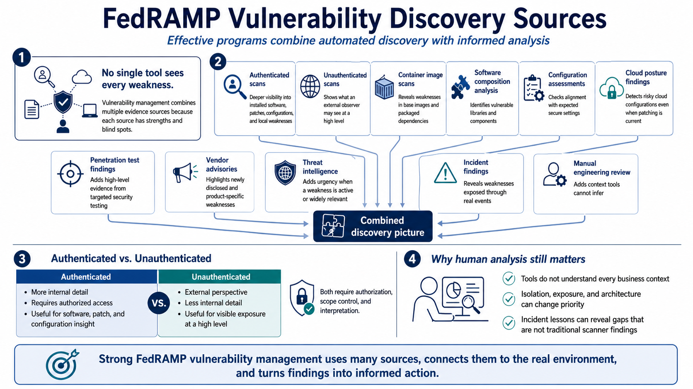

Vulnerability Identification Sources
Connecting to LMS... Progress: in progress

Narration
No single tool sees every weakness. Vulnerability management usually combines authenticated scans, unauthenticated scans at a high level, container image scans, dependency and software composition analysis, configuration assessments, cloud posture findings, penetration test findings at a high level, vendor advisories, threat intelligence, incident findings, and manual engineering review. Each source has strengths and blind spots.
Authenticated scanning can provide deeper visibility into installed software, patches, configurations, and local weaknesses because the scanner has permission to inspect the system more thoroughly. Unauthenticated scanning can still be useful for understanding what an external observer might see at a high level, but it usually has less internal detail. Both need authorization, scope control, and interpretation by people who understand the environment.
Modern cloud services also need software and platform-specific sources. Container image scans can reveal weaknesses in base images and packaged dependencies. Software composition analysis can identify vulnerable libraries. Cloud posture tools can detect risky configurations even when software patches are current. Vendor advisories and threat intelligence can add urgency when a weakness is actively discussed or widely relevant.
Manual review and incident lessons matter because tools do not understand every business context. A scanner might not know that a service is isolated by design, or that a configuration is exposed in a way that changes priority. An incident may reveal a missing logging path or fragile dependency that does not appear as a traditional vulnerability. Effective programs combine automated discovery with informed analysis.